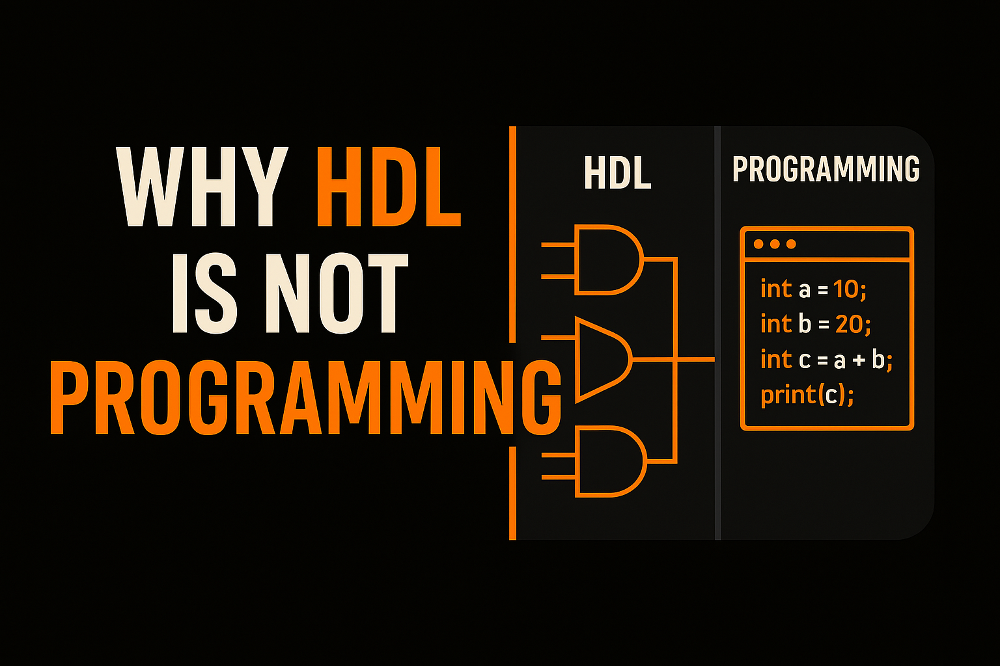

This blog is about demystifying a very common misunderstanding that a lot of students have when entering the field of VLSI, especially when they come across HDLs (Hardware Description Languages).
And it’s not entirely their fault. Across the world, whenever someone
hears the word “language”, especially in a tech context, people
tend to associate it with programming languages, the most common being
Python, C, or C++
(not that other languages like Rust or
Java are unpopular).
Wikipedia:
C influences Python/Java syntax
Because of that common usage of the word language in the context of programming, many assume that HDLs are also just another kind of programming language.
But that’s not the case, and in this blog, I’ll try to clarify why.
1. Syntax Similarity but Conceptual Difference
The biggest commonality between any programming
language and an HDL is the syntax.
When one starts learning HDL, especially Verilog, they
often find it quite similar to C, and that’s true to an
extent. The syntax is indeed somewhat similar, but the
purpose and functionality of these
languages are fundamentally different.
GeeksforGeeks
HDL vs Software comparison
A programming language needs existing hardware to compile and run on,
whereas HDL is the language that describes or
even creates that very hardware.
AllAboutCircuits
HDL explainer
2. Output: Programs vs. Circuits
In terms of output, programming languages can produce many kinds of
results, from a simple print("Hello World") statement to
complex data structures or algorithms.
On the other hand, the output of an HDL is a circuit,
or at least that is the ultimate goal.
Verilog vs C: A Direct Comparison
Verilog (Hardware Description)
module and_gate (
input wire a,
input wire b,
output wire y
);
assign y = a & b;
endmoduleDescribes a physical AND gate that exists continuously in hardware.
C (Programming Language)
#include <stdio.h>
int main(void) {
int a = 1;
int b = 0;
int y = a & b;
printf("%d\n", y);
return 0;
}Executes instructions to compute a value at runtime.
As you can see, Verilog describes hardware while C describes sequential instructions.
Not every HDL code can be directly turned into a circuit. That step
is known as synthesis. If written carefully, the output
of an HDL describes an actual circuit that breaks down into
gates, multiplexers,
latches, and flip-flops, which can,
with proper tools, be further decomposed down to transistors
(PMOS and NMOS) and beyond.
Cadence PCB HDL synthesis
These circuits are what make up the chips used in everyday devices, from smartphones to cars and much more.
3. Language Levels: High and Low
One of the most significant differences between programming languages and HDLs lies in the concept of language levels.
Programming languages are categorized as high-level or
low-level based on how easily the machine can break them down
to execute the desired tasks.
At the lowest level, we have assembly language, which
directly corresponds to the instruction set architecture of a given
machine, and machine code, which the hardware
understands without any further translation.
Then comes C, one of the most popular and foundational languages of all.
C is often regarded as the mother of all programming languages because it strikes a balance. It is high-level enough to be human-readable, yet close enough to hardware that the compiled code runs efficiently without requiring heavy translation.
That’s why a lot of firmware and embedded
programming is written in C. It sits at the borderline between
high-level and low-level, allowing direct hardware interactions,
something not easily possible with languages like Python or Java.
Low vs High-Level
explanation video (2 min)
Python, Java, and other modern programming languages are much more human-readable, but it takes a lot more computational resources to compile and execute them efficiently.
(Though personally, languages like Rust and Java aren’t my favorites or something I’m interested in learning.)
4. Why HDL Matters for Software Engineers
A major misconception among many software developers is that HDL isn’t relevant to them. I strongly disagree.
Just as RTL engineers benefit from knowing programming languages,
software engineers can benefit from understanding HDLs.
With the recent trends in AI and the shortage
of RAM in the market, efficiency is becoming increasingly
important. Companies are optimizing their codebases to use less RAM and
hardware resources, and a solid grasp of hardware description concepts
can make a big difference.
SIGARCH HDL for AI
accelerators
5. Execution: Parallel vs. Sequential
One of the most crucial differences between programming languages and
HDLs is in their execution model.
HDLs are parallel by nature, whereas programming
languages are typically sequential.
What does this mean?
In HDL, all lines of code are effectively active at the same time. If
there are 100 lines of code, line 1 and line 100 start executing
simultaneously at time t = 0. The difference lies only in
how and when their outputs are processed, depending on the circuit’s
behavior.
That’s also why clock signals play such a critical role in HDLs. Timing governs how data moves through the hardware.
Programming languages, on the other hand, execute instructions
sequentially. Line 1 runs before line 2, and so on.
Although at a superficial level it might seem parallel due to features
like multitasking, the underlying hardware still executes instructions
one after another, sometimes leveraging concepts like
pipelining or out-of-order execution,
which again come from hardware design principles.
GeeksforGeeks
parallel vs sequential table
HDL vs. Programming: The Pasta Burner Example
Let’s wrap this up with a simple analogy.
Think of HDL like cooking pasta using all four burners on a gas stove at once. One burner for the pasta, one for the sauce, one for the broth, and one for something else (I’m honestly not that great at cooking).
A programming language, on the other hand, is like cooking on a single burner. You have to boil the water first before adding the pasta. If you add the pasta before the water boils, you’ll just end up burning it.
I hope I was able to explain the basics of the difference between pasta… ohh sorry, programming languages and HDLs.
I’ll be back soon with another topic like this. Hope to see you again.